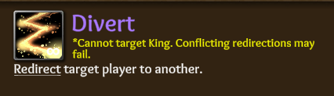

- Status: LIVE (Patch notes final)
- Short URL: https://toli.es/patch-v3
Major Balance Changes (x13)
The thought process behind each balance change will be bulleted below.
Blue Dragon (Balance)
1. Court Wizard received an ability set revamp.
- The old Empower abil was a complicated mess for multiple reasons: It was hard to understand for new players, sometimes even for veterans - and for all that, it wasn’t even satisfying to use.
- By giving the player more control over what their primary night action does to any target of their choice, the class should overall become a lot more enjoyable to play and a ton easier to understand for newcomers. By further adding separate ability names, descriptions and icons to bind to memory, this further helps streamline the learning process for all players.
- To prevent temporary immunity to occupy and redirection, yet still allow the CW to be occupyable/redirectable (sort of a paradox), we had to be creative: In this approach, the CW will “undo” an occupy/redirection – therefore, when this happens, it will be revealed that the CW intensified you. Example:
- As a bonus, Empower was not scalable at all - happy to see it go away from a dev’s perspective.
2. Increased Observer’s spawn chance to be higher (similar to other BD).
- The Observer, despite being equally balanced to other classes, had a rarer spawn chance due to a previous version of him being very strong. However, after the previous nerf, it should no longer disrupt balance.
- Allowing the Observer to spawn more often will allow players to experience more content and make it easier for new players to get into the game because it will remove an unwritten exception to the spawn rules.
- This should also saturate the potential spawns, making other classes appear less often, giving players a higher chance to play different classes and more-likely to not end up with 3 of the same class.
3. Chronomancer’s Distort Reality abil is now unable to pick the King as 2nd target.
- Distorting Reality had a risk of moving a delayed death to a strong Blue Dragon class. This could be bypassed by moving it to the King, because he is not only able to protect himself, but also a potential evil class. By picking King as the 2nd target, the Chronomancer was able to rather safely defuse the delayed death, as well as potentially kill the King. Additionally, because of the previous removal of Drunk’s Debauch targeting to King, this change should also be added to the game for similar reasons of no BD penalty for killing the King.
Evil (Balance)
1. Mastermind loses Little Bird day ability.
- AKA “Bolt the Bird” nerf, Little Bird was an ability capable of stopping players from whispering simply by existing. This meant that it effectively removes one of the major mechanics in the game: whispering. Because of this, alternative ways of sharing information were strongly discouraged.
- It has come to the point where a Mastermind isn’t even required to use his ability or even spawn for players to still be terrified of it’s strength. As such, we would like to see how the game fares without the paranoia and limitations created by this singular ability.
- If this reverts back to all-whisper metas (shame on you ;p), we can always come back to this in some compromised form.
Neutral Killer (Balance)
1. Replaced the Sorcerer’s Bomb Swap abil to Escape Fate.
-
- We will change up the pardon messages to either be King or Sorcerer.
- Bomb Swap was rarely used and, in most situations, a waste of a day for the Sorcerer.
- She also had trouble later in the game when numbers get lower. While the other NKs could control the court during the day and avoid being voted up (Reap and Silence type abils, as well as Force Vote type abils), Sorc was left with no additional help to protect herself from being voted out. Because of this, it’s difficult to win with her.
- That said, a Force Pardon type ability helps her end the game in a victory without being dependent on other Neutrals.
2. Reaper’s Circle of Death # of souls cost lowered from 2 to 1.
- Circle of Death, due to it’s originally-high cost of 2 souls, and another 1 soul you wouldn’t get from using Reap, is a rather big investment for little gain.
- Lowering the cost of the ability allows players to use it more often and without the big risk it currently creates for the Reaper. 1-cost Circle also allows the Reaper to use it N1 without risking death - which would be a bigger risk for outing early as a priority Blue Dragon class.
3. Reaper’s Circle of Death can now target himself and the King.
- This adds some utility to the ability by letting the Reaper Circle himself to prevent investigatives from finding him that night and possibly preventing a resurgence of the Whisper King Meta.
Neutral Non-Killer (Balance)
1. Sellsword’s Initimidate abil has been swapped out with Divert:
-

- Originally, Intimidate overlapped in its use with Stonewall, as well as having the chance of occupying your allies. This made Intimidate an ability you would rather want to avoid using.
- Changing it to a Debauchery-like ability offers Sellswords the ability to help out their allies without disrupting their actions, as well as it would allow them to redirect healers into their bleeding allies. This change would also make Drunk a more-difficult class to confirm which would overall improve the balance of the game.
2. Inquisitor can no longer target the starting King with his abilities.
- The starting King could never be heretic, anyway. The only reason why you would want to attack him is to step up as Neut King, which is not a proper usage of Ruthless Efficiency (some people stab King n1 to step as King d2 to not have to play Inq). Elected Kings need to be targetable still, since there can be heretic elected Kings.
3. Inquisitor heretics are now only non-King Blue Dragon faction members (with the exception of Prince/Hunter).
- Being a Cult/Unseen heretic didn’t not feel good, especially for Unseen – because starting Assassin is extremely important to the faction due to the Apprentice abil passive.
- It also didn’t feel good for Inquisitors, themselves, since there are various scenarios where said heretic Assassin could become the next Mastermind; therefore becoming effectively unkillable at night.
- In addition to the above, this change may make Inquisitors reconsider an open-claim less – which would contribute to solving the issue of open-claiming neutrals.
4. Mercenary is now unique.
-
 CURRENTLY NOT WORKING – will fix when we find the cause
CURRENTLY NOT WORKING – will fix when we find the cause
- Mercenary is a very influential and helpful for the Blue Dragons Neutral class. Her abilities focus on protecting others, so most players are rather open to keeping her around. Due her ability of being able to protect and deny abilities to this extent, she was made Unique, in a way to balance her.
- Additionally, when 2 Mercenaries spawn, the one that has the lower number has an easier way of winning due to how core mechanics of priorities work (if 2 Mercenaries Guard the same target the one with the lower number gets awarded with the occupation). This makes being the 2nd one to spawn a rather big pain and disheartening.
5. Increase the amount of Brilders required for Mercenary to win from 6 to 7
- Mercenary already has her fairly easy-to-fulfill win condition: By removing a few sources of occupation this patch, this class will now have it even easier to fulfill her win condition; so making it slightly more-difficult to win seems like an appropriate balance.
6. The Fool’s Poor Fellow passive abil punishment reduced to just 1-day always.
- The Fool, after being executed, stops any further executions for some time. Due to how easily it can be given, the old way was too punishing for players. Losing 2 days of trials was very disruptive to gameplay and, depending on the situation, it can even lose games for Blue Dragon.
- Reducing punishment to only 1 day should make it less of a pain, while still making players be on the lookout for Fools.
Thank you dev panel members for taking lead on the direction of this balance patch!
Notable Class Fixes
- Reaper (and possibly other 2-day-ability classes) cancel exploits fixed.
- Maid’s Matchmake abil will no longer sometimes show no feedback. Thx
@Kaien+ @Planterror - Maid’s Matchmake abil will have better matches vs Mastermind’s In The Shadows passive abil.
- Fixed the old bug where Drunk wasn’t receiving feedback for using Debauchery abil on a target that used a 0-target ability (such as Mystic’s Mind Link abil). Thx @Stoneage + @Arete
- Fixed a rare bug major bug (that’s been here since launch that was hard to catch) that caused desyncing when creating a new game, caused by room names not being unique. This was rejecting every server call since the room name was looking at an OLD game that wasn’t live. This fixed a few combo bugs that sometimes occurred:
- Follow bugs
- Rich presence bugs
- Gp cache not matching server
- Bonus gp grants (eg, Brilders/death abils)
- Skewed stats
- Failed reporting a player
- Anything relating to relying on a check based on the room name (surely several others)
- Debauchery-type abils now works again with 2-target abilities.
- Numerous ability resolve priorities have been altered to prevent unexpected theoretical combo errors due to order used, such as missing Gossip among other oddities (from inconveniences to major bugs) due to priority orders.
- Psycho King’s attack, when target is death immune, will now show the same feedback that others see. Thx
@Torino - Fixed Heal showing CNH instead of DNR for an active Possess.
- Matchmake will now return Incompatible if Scorned is matched with someone framed.
- Fixed 2-target abilities that shouldn’t allow targeting the King in target panel 2.
- Fixed Chronomancer’s Pocket Dimension to work vs bleeding out.
- Inquisitor’s attack will no longer result in DNR instead of CNH for the healer.
- Ritualist’s Teleportation target 2 panel can no longer target the King.
-
Hunter’s Mark abil’s occupy mini-revamped: Should work way better, now.
- Eg, vs Sorcerer, among others.
- Still may not work properly vs Knight, however (WIP - this ability’s code is a pain
 ).
).
- Fixed targeting for abils that would allow self-targeting in 2nd target panel, but not 1st; such as Strings of Mithras
- Apostle can no longer use Cult Pressure on other Cult members (definitely not intended :P)
- Sorcerer’s “You sensed something was off” feedback has returned.
- Fixed Chrono’s Pocket Dimension not working when you die from a bleed when you use Time Warp at night.
- Better status syncing between masters to prevent weirdness.
- When healing someone recently smited, it now shows “Could Not Heal” instead of something else.
- Stand Guard no longer awards brilders to those already occ immune.
- Hunters Mark no longer says that you attacked “and occupied” them if you didn’t occ them (eg, they were occ immune).
- Butler’s Concentrated Wine abil no longer bypasses occupy immunity.
- If you get occupied on a night you get converted, that night now counts towards occ immunity.
- Physician’s Heal now gives proper CNH feedback to unhealable attacks.
- Note that Self Heal probably does not - will work on this in a future mini patch.
Minor Class Fixes
- Fixed Inquisitor’s Interrogate abil grammar. Thx
@Kaien - Fixed contradicting wording of Matchmake abil description. Thx
@Corn - Aristocrat’s Intrigue abil description now matches exceptions to Gossip. Thx
@thereaper633 - Fixed some feedback “perspective bugs” (eg, target<>“you” or target<>“sameTargetButShouldntBe”).
- These get confusing: If you see anymore of these bugs, please include as many details as possible. If you redirected someone, please let me know what classes they ended up being.
- Fixed Conduit %TARGET% feedback.
- Added memo to Paladin’s Smite ability that it bypasses death immunity for clarity.
- Fixed for “x, y and z” list-style feedback errors (fixes or<>and & misplaced periods). Thx @Stoneage
- Fixed Disguise abil feedback from being ridiculous (the verb ‘disguise’ was being replaced with the entire ability description). Thx @Stoneage
- Your “last classes played” list cache was not being updated for the session (unless you restarted): This is now fixed (resulting in less chance of getting the same class for the session).
- Removed redundant “you attacked x” after “you occd and attacked x” from Hunters Mark abil.
- Hunters Mark abil now properly displays [gossip] feedback when occ failed.
- Hunters Mark abil swapped the word, “them”, with “target 1” since “them” can incorrectly imply both targets.
Class QoL
- Surviving an attack due to death immunity now has a tip appended, should you have tips enabled in options:
…“this could be because of one of your [passive] abilities, the King or the Court Wizard”
- Whenever you switch chat tabs, you’ll now auto-focus the input field where you type (this includes when Mystic uses their night abils).
-
Mystic’s Link Minds and Conduit abil notifications will mirror in Mystic chat to better keep track.- Delayed: Not working as intended.
- Mystic’s Conduit abil now has separate sfx from Mind Link.
- Maid’s night tips tab is now a cheatsheet full of Matchmake abil combos:
- Princess also gets a Flirt abil cheatsheet:
- Several misc. better wording for memos/ability descriptions.
- Conversions against disconnected players will now fail at ability resolve time (now that players are instantly killed off when d/c’d - see next section).
- If target was Smited, Time Warp abil will now say you “could not delay” their death (rather than “x did not die”).
Disconnection
- d/c’s are now killed off the following morning:

- “x has left the game” will now only show once.
- Ignoring the screenshot above in yellow, d/c’s are now in a blue that stands out more:
Localization: Chinese (中文)
- Just added 1000+ new phrases, focusing on ability feedback!
- We are about 99% localized, now.
- Fixed lobby top-left and top-right spacers (that made the buttons look uncentered).
- Changed lore link to go to a localized Wikia (although WIP).
- Bottom region now says either “English” or “中文” to be less confusing.
-
Notes:
- Store is not yet fully translated.
- Vocabulary is not yet translated.
- Patch notes will not be in Chinese [yet] until we get a publisher to assist with this in the future (not enough resources, currently).
- English cancel flavor text needed to be a bit more generic or it’s a bit impossible to translate.
- Removed the Chinese<>English switcher due to an overwhelming number of issues switching back and forth: It’s like coding the game twice, similar to reconnection: This seems to be why most online games don’t allow you to swap languages mid-game
 Apologies!
Apologies!
General / QoL
- Replaced the start sfx with something more dramatic (with both bass + treble), also lasting a few seconds instead of 1/2 second. I also fixed a bug that would sometimes cause the “game starting” sfx to cutoff early, if you’re a speedy loader. Thx @anon97870008
- Start sfx will now bypass in-game (NOT Windows) mute and temporarily set minimum in-game volume threshold just for this sfx to prevent afk matches (benefiting both the user and other players, assuming they actually wanna play if they had the chance). Not this patch, but later: I’ll add an option to turn this off (default on).
- Added ability hover sfx for the 2 day/night parent buttons. Added 5% random pitch shift for flavor. Also added this to the tutorial.
- Left Game (Disconnected) system messages are now a darker cyan color to stand out more through chat spam.
- Fixed our Steam library’s floating text logo from incorrect upload. Thx @alitnk
- Better lobby anchoring (position adjustments) for non-standard resolutions
- Upgraded Unity from 2020.1 beta to 2020.1 stable.
- OCD-centered a loading tip that had an entire line for only one word, reducing from 3 lines to 2.
- Fixed some pitch shift sfx for non-hovers: Some abilities and clicks may sound slightly different each use.
- Added some class card scrolling sfx.
- Adjusted the weapon store mask so it’s not cutting off Vortex Amulet.
- Fixed vertical-center of options resolution in lobby.
- Double gold gp weekend banner link on the left of lobby now more-intuitively links Double Gold (gp) Weekends! instead of Discord (although not so informative, can always edit).
- Fixed underline thickness. Some may still be uneven due to custom line spacing, but it’ll at least be legible.
- Added some missing hover/click sfx to the tutorial.
- Added more Glossary terms.
- Class Cards Notifications name replaced with Feedback for consistency.
- Butler and King’s feedback for cancel was removed (leftover/experimental).
- Better memos for Teleportation and Tornado abils.
- Better class card ability text masking when scrolling.
- Fixed the settings cog button in the tutorial that wasn’t previously interacting.
- Moved tutorial settings cog to front of tutorial overlay
- Made Newcomer ‘Squire’ incognito title button disable more obvious
- Tutorial can no longer target already-dead targets with Assassinate.
- You are now given a hint to stop telling people to report others after doing so a couple times.
-
/rcommand to reply to the last player to whisper you. It automatically replaces itself to/w <number>upon typing it to avoid last second whisper confusion. - Attackers are now told the possible causes of death immunity upon hitting a death immune target.
- No longer automatically switching to mystic tab to avoid evils sending sensitive info to the mystic.
- Fixed bug where the text above the player list would say “Unable to start a trial.” when you could actually start one.
- Added some new hotkeys.
LeftCtrl+Lfor logbook andLeftCtrl+EmoteNumberfor each emote. - Fixed lobby UI’s “match found” panel sometimes stacking over the main screen with placeholder values.
- Fixed the freeze if you hung out at the end screen for too long.
- Pressing enter in lobby no longer takes you to the lobby chat.
- Host’s name is now bold in public lobbies as well.
- Class stats should be a little more consistent now.
Art
- Nightwatch got a portrait revamp (#baldByChoice):

–Xblade
Related:


{kind=link}
{kind=link}
{kind=link}